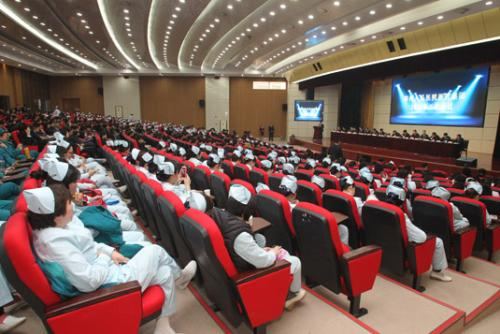

淮安仁爱医院大型妇科公益活动——关爱女性5.1爱劳动享健康
2018-04-28 15:15:22 来源: 综合 作者:
淮安仁爱医院近期统计发现:许多妇科病往往因没有早期症状而被忽略,很多女性去医院看妇科时,往往都已经感觉到不适,结果常常因此失去了最佳的治疗机会。所以,定期地做妇科检查是很有必要的,尤其是有性生活的女性,更应每年定期做妇科检查。
值此五一国际劳动节、母亲节来临之际,为答谢淮安女性多年来对淮安仁爱医院的信任与支持,淮安仁爱医院特邀京沪十几位妇科专家亲临会诊,并启动“关爱女性健康公益援助减免活动”给广大女性劳动者送去健康,让百姓花少钱、看好病,惠泽广大淮安女性朋友。

为帮助女性彻底解决妇科“看病难、看专家难,看病贵”的普遍问题,淮安仁爱医院活动期间采用免京沪专家教授会诊费,六项妇科检查57元,各类手术五折起(专家教授亲自手术示范)等优惠方式,用实际行动为民众提供帮助。